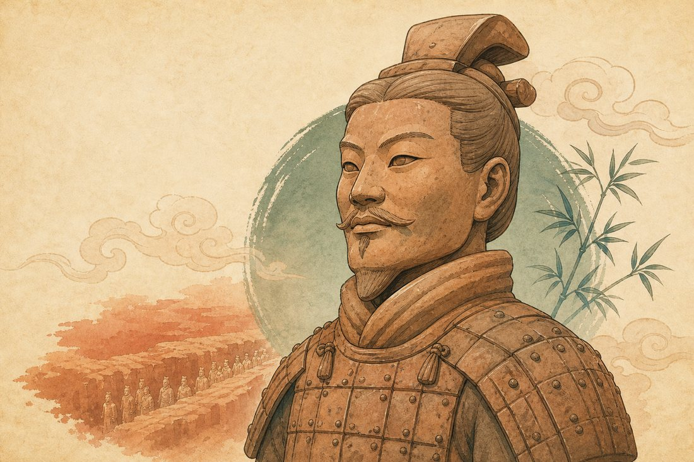

Die Terrakotta-Armee
兵马俑
Viele Soldaten aus Ton stehen unter der Erde. Jeder sieht ein bisschen anders aus.
Ich sehe die Terrakotta-Armee.
Ein Bauer fand die Figuren 1974. Unter der Erde standen Tausende Soldaten aus Ton. Heute ist der Ort weltberühmt.